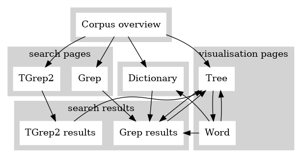
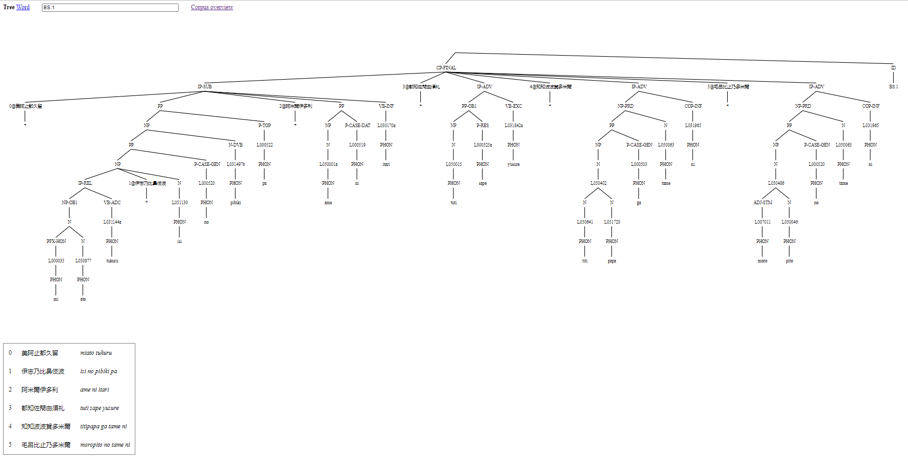
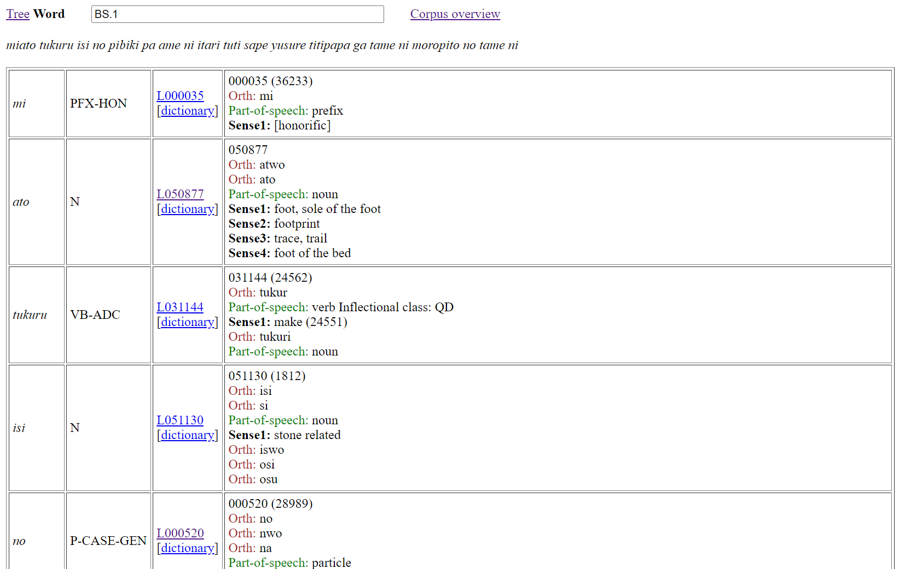

A new corpus interface was launched at the end of 2021, and this is now the principal search interface for the online corpus. This interface can be accessed here. The ONCOJ search interface is useful for:
The interface gives direct access to the most up-to-date working files of the ONCOJ database. Note that stable release versions of the ONCOJ are periodically made (roughly every six months) and can be accessed as release downloads.
The corpus overview page is the default entry point to the interface and is also reached by clicking the ‘Corpus overview’ link of any of the other pages. Other possible navigations through the interface are illustrated in Figure 1. Notably, the search pages and dictionary page are intermediate steps for reaching search results that can subsequently take you to a tree page. A tree page shows the complete tree analysis for a single poem. Nodes of a tree can be clicked and will take you to a Grep search for the node element. From a tree page, you can change to a word page, and from a word page you can change back to a tree page. Content from the word page can be used to access entries of the corpus dictionary, or trigger Grep searches.
Figure 1: Map of the interface
The corpus overview page contains links for reaching the Grep and TGrep2 search pages and the dictionary page. There is also an ID field box with the functionality described in section 3 below. Finally, there are grouped listings of all the corpus texts, with each listed item serving as a clickable link to a tree page for the corresponding text.
The corpus overview page and visualisation pages (Tree or Word) all contain an ID text field box. When the corpus overview page is open, the ID box is blank. With a tree page or word page, the ID box will contain the full ID name of the shown text analysis. If there is no match for the content of the ID text box, then a blank tree page or word page is shown. You are free to edit the content of the ID box, and then by pressing the [ENTER] key, you will jump to the corresponding page for the edited ID information. If you edit the ID box to give the full ID name for a text, then a visualisation for the text is reached. If you do this from an already open visualisation page, then the mode of visualisation (Tree or Word) will be maintained for the reached analysis, but if you do this from the corpus overview page then you will jump to a Tree view page for the referenced text.
To understand the functionality of the interface, particularly the options for search, it is helpful to know about the underlying data format used by the search interface. The entire corpus is contained in a single file containing the instances of parse analysis for each poem separated by blank lines. Each analysis instance begins with a line that presents the overall word yield for the analysis. This yield is presented between opening and closing brackets with the form: ‘=N(" ’ and ‘ ")’. Following this opening line comes the parse analysis itself, with each word of the analysis placed at the end of its own line. Furthermore, each analysis line presents the path information from the root layer of the parse through to the word layer. The last line of a parse analysis instance is the ID node for the instance.
As an example, (1) shows the parse analysis for the first two poems of the corpus:
Note that some nodes in (1) have extra markings, e.g., "PP;@2" and "PP;@4" of BS.1. These nodes have the same preceding paths, namely: "CP-FINAL","IP-SUB". When distinct nodes have the same tag and the same preceding path, having the extra marking ensures nodes are uniquely distinguished when considering multiple paths. The convention followed for extra marking includes ‘;@n’ for the n-th sister node of a shared preceding path.
To support TGrep2 search, the format of (1) is converted into bracketed trees with a TOP node, as in (2).
Note that ‘;@n’ markings of nodes are removed, since nodes appear only once within the bracketed structure and so are always distinct.
The interface provides two different methods for searching the corpus: the Grep page (section 5.1); and the TGrep2 page (section 5.2).
The Grep page gives a link for returning to the corpus overview page, and a text field box for entering a grep search pattern. A search is made after a search pattern is entered into the text field box and the [ENTER] key is pressed.
Search is made using the grep command (Magloire et al. 2021) under a call (grep -n) to a single file containing all the corpus data in the corpus format described in section 4, and illustrated with (1). Aside from making changes to the search pattern, there is no other way to restrict the searched data.
To find words that have the lemma L031934a, use the search pattern (3).
To find verb gerund words that have the lemma L031934a, use the search pattern (4).
Note that the double quotes character (") cannot be used in grep search patterns made with the interface. In patterns (4), mention of double quote characters is avoided with use of the dot (‘.’) character, which matches any single character.
In addition to searching for word lemmas, the Grep search page is particularly useful for searching through the yield lines of the annotation. Any search that involves a space character will automatically be restricted to finding its matches from yield lines.
After making a search, a count of the number of matched results is given at the top of a returned results page. This is followed by a display of the results in a tabled format with two columns. The first column consists of possibly coloured cells that contain the full content of a matched line from the corpus data, and the second column contains information about the line number within the single corpus file. This line number serves as a link to a tree page for the overall linked instance of parse analysis, with the terminal node for line content highlighted in the resulting tree of the reached tree page.
The colouring of cells in the first column depends on the cell content as follows:
The colouring of cells is a notable aid for being able to easily pick up on differences in the annotation, especially as a search can bring together lines from throughout the corpus.
Up to 2500 consecutive search results are returned following corpus order, that is, with matches taken from files following an alphanumeric sort of the corpus IDs. That returned results are consecutive is important because this allows for the potential of contextual information being seen across returned lines. Quite where in the corpus order the consecutive search results come from is established through a random selection. If there are more than 2500 results, you can see a different batch of 2500 results by re-running the search.
When there are less than 100 search results, a link is provided at the bottom of the page for opening in a tree page a display of all the returned results as trees.
The TGrep2 page gives a text field box for entering a TGrep2 search pattern. A search is made using the tgrep2 command (Rohde 2005) over all the corpus data in a binary database built from data that was first converted into the bracketed format described in section 4, and illustrated with (2). Aside from making changes to the search pattern, there is no other way to restrict the searched data.
TGrep2 search patterns consist of expressions to match nodes and relationships defining links or negated links to other nodes. Nodes of searched trees are matched either with simple character strings, or OR'd character strings, or extended regular expressions. A complex node expression consists of a node expression (the master node) which is followed by relationships. Also, nodes can be assigned labels and may be referred to elsewhere in the pattern by those labels. For a full explanation of this query languages, click the Guide link.
As an example of a TGrep2 pattern, consider (5).
Pattern (5) describes a subject phrase that both directly dominates a genitive-marked element and also precedes a sibling object phrase that itself directly dominates a particle node that dominates a phonologically written character node which in turn directly dominates the word wo; or, in other words, a genitive marked subject that precedes an object that is marked by the accusative case particle wo, written phonographically.
If the search text box is blank, then there are tables listing the full tag set used in the corpus. A search is made after a search pattern is entered into the text field box and the [ENTER] key is pressed.
In addition to the text field box, the TGrep2 page gives a link for returning to the corpus overview page, and a pull-down-selector for choosing between two methods for displaying results:
After a query is made, at the top of the page, the search reports the number of hits found, and the number of texts that contain hits. There will also be a button at the top of the page for downloading the search results. With a download, results are listed in corpus order, so a re-run of a download will give you the same download (assuming the corpus hasn't changed inbetween).
Returned search results are given as a tree yield, that is, an extraction of the terminal nodes of the tree. Content corresponding to what is matched by the master node of the query is highlighted.
Each returned entry is given a hit number. The hit number doubles as a link to the tree view page for the given text.
Results are displayed as trees, with content that matches the master node of the search pattern highlighted. The ID node of a shown tree works as a link for accessing the same tree in a Tree view page. Up to fifty trees are shown in corpus order. If there are more than fifty results, you can see different trees by re-running the search.
If you download all results by clicking the ‘Download all results’ button, you will see as many trees returned as there are results of hits reported. It is possible for a results download to contain multiple instances of the same tree, with each match of the search expression leading to a return of one instance of a full tree found by a particular match of the search pattern. There is no indication in the download as to how the returned trees were matched.
By contrast, the displays of tree yields or graphical trees include highlighting to indicate nodes that match the search expression as the master node, with the possibility of seeing multiple matches per tree. This behaviour was chosen for the display of results because the highlighting is overlaid as a secondary operation; it is not generated by the actual TGrep2 search. For this reason, matched trees with highlighting are shown in the display only once.
Note that it is possible for the same master node to be picked up by the same search pattern in different ways and so this will lead to a case of not seeing as many nodes highlighted as are reported to have been found by the search. Such an outcome indicates that the pattern is not a good one for statistics, since the same match is being counted in multiple ways.
The interface provides two different modes for visualising consequences of parse analysis: the tree page (section 6.1), and the word page (section 6.2). These pages all have an ID text field box that will contain the full name(s) for the analysis being shown. The content of the ID box can be edited, as described in section 3.
At the top of each page, in addition to the ID box, there is also:
The tree page shows a tree visualisation of an instance of parse analysis. If multiple parse analysis IDs appear in the ID text field box, then a tree for each ID is shown. In the case of multiple trees being shown, each tree is preceded by an ID heading that works as a link for opening the same tree in a new tree view page. In the case of a single tree being shown, the full text of the poem is presented in a table with three columns. The first column shows line numbers for the text. The second column is the original script. The third column is the phonemic transcription Figure 2 illustrates the tree page with parse analysis for the first poem of (1) and (2).
The word page shows morpheme-by-morpheme correspondence between Old Japanese and English dictionary entries for all of the texts. If multiple parse analysis IDs appear in the ID text field box, then word analysis for each ID is shown. Figure 3 illustrates the word page with word analysis for the first poem of (1) and (2).
As Figure 3 shows, word analysis is presented in a tabled format with four main columns for words. The first column is for a word as it occurs in the source text. The second column presents the word class of the word from the first column. The third column presents the lemma number for the word as a link for a Grep search of the corpus, and a dictionary link for jumping to the dictionary entry for the lemma. The fourth column presents information about the lemma from the ONCOJ dictionary.
Magloire, Alain et al. 2021. GNU Grep: Print lines that match patterns, version 3.7. Free Software Foundation.
Rohde, Douglas. 2005. TGrep2 User Manual version 1.15. Available at: https://github.com/andreasvc/tgrep2.